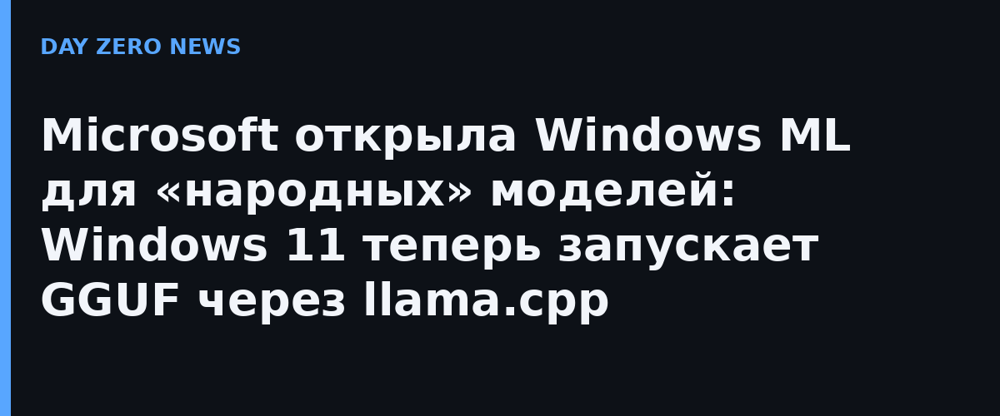

Windows ML — это локальный фреймворк инференса для Windows 11: он позволяет приложениям гонять нейросети прямо на устройстве, распределяя работу между процессором, NPU и видеокартой, и при этом не зависеть от оптимизаций под конкретное железо. Теперь к нему добавился экспериментальный путь на базе llama.cpp — самого популярного инструмента для запуска открытых моделей на обычном ПК. Практический смысл: GGUF-модель с Hugging Face подтягивается и запускается через знакомый Windows ML-стек буквально в несколько строк кода.
Второе объявление — экспериментальный Windows-native inference path, то есть Windows ML Runtime API. Microsoft описывает его как более быстрый, глубже интегрированный в систему и дающий больше контроля над тем, как модель исполняется. Одна поверхность закрывает оба формата — и ONNX, и GGUF. Поверх него вышли две предметные библиотеки: Text Generation API для генерации текста (работает и с GGUF-, и с ONNX-моделями) и Speech Recognition API для транскрибации речи — внутри лежит Whisper в формате ONNX. Это ровно тот минимальный набор, из которого собираются диктофонные расшифровки, локальные чат-боты и голосовые ассистенты без отправки данных наружу.
Microsoft отдельно подчёркивает, что партнёрство с сообществами llama.cpp и GGUF — не односторонний жест: компания вместе с NVIDIA отдаёт патчи в llama.cpp и связанные оптимизационные проекты, чтобы стек лучше работал и на x86, и на Windows on Arm. Классический ONNX Runtime API остаётся полностью поддерживаемым, но будущие оптимизации под Windows будут приходить сначала в Windows ML Runtime API; обе среды уже есть в текущей сборке, и разработчик сам выбирает момент миграции.
Всё это пока помечено как experimental: в официальном анонсе прямо советуют перед продакшеном сверяться со списком поддерживаемых сценариев и известных ограничений. Но направление очевидно: Windows системно превращается в платформу для локальных открытых моделей — там, где ещё год назад «свой GPT на ноутбуке» требовал ручной сборки из консольных утилит.